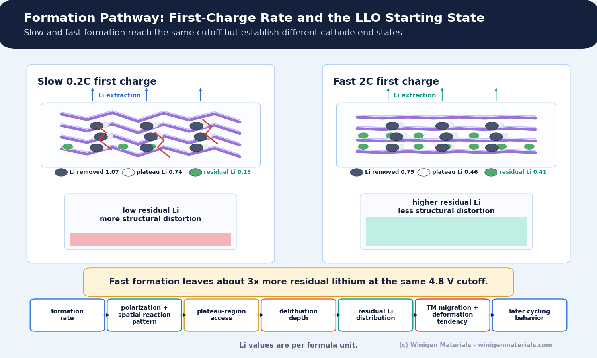
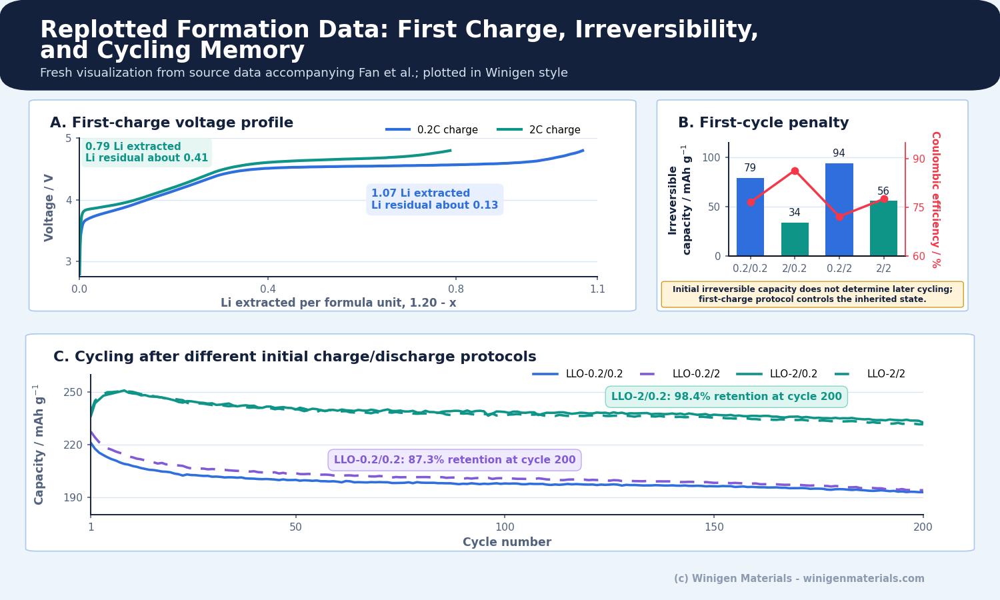
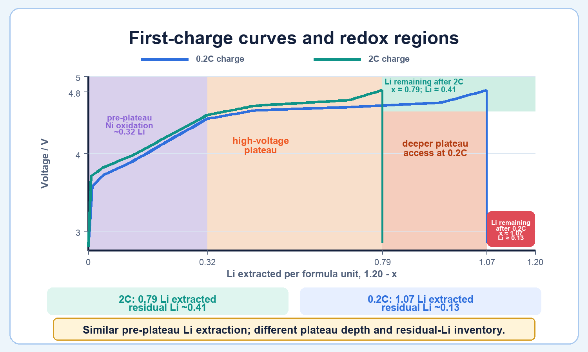
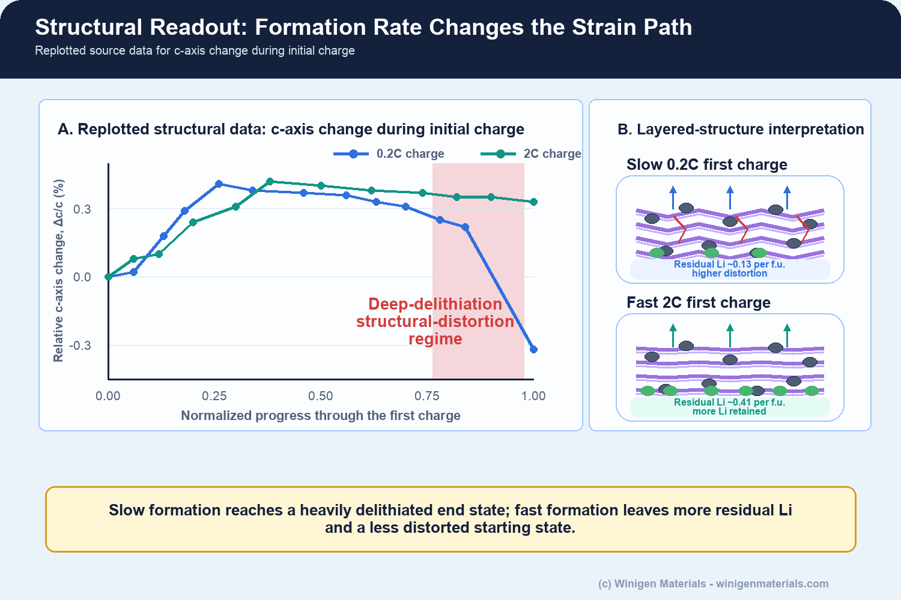

Battery formation is usually introduced as the first electrochemical conditioning step after cell assembly. In practice, formation is where wetting quality, SEI and CEI growth, gas evolution, lithium inventory loss, impedance, pressure, ageing, and quality sorting first become coupled in a real cell. The 2024 review by Schomburg and co-workers frames formation as a knowledge-based process-design problem rather than a routine startup cycle [1].
Fan and co-workers examined a cathode-specific effect in lithium-rich layered oxides: the structural state established during the first charge persists into later cycling [2]. At the same 4.8 V cutoff, the faster first charge extracts less lithium, leaves more lithium in the host, limits deep access to the high-voltage plateau associated with oxygen-redox activation, and produces better subsequent retention. Formation in this system affects both interphases and the cathode state inherited by later cycles.

1. Conventional Formation Is Already a Multivariable Process
In commercial lithium-ion manufacturing, formation includes much more than one cycle: electrolyte filling and wetting, rest, first charge and discharge, voltage holds, gas evolution, degassing, pressure or fixture control, ageing, and quality sorting. The Schomburg review emphasizes that formation conditions are shaped by material choice, cell design, electrolyte composition, pressure, temperature, degassing, and formation cycling itself [1].
For graphite-based cells, formation work often centers on SEI growth, irreversible lithium loss, gas, and impedance. High-voltage cathodes add CEI formation, electrolyte oxidation, transition-metal dissolution, and voltage-hold stress. Silicon-containing anodes add expansion, SEI repair, additive consumption, and early swelling.
In lithium-rich cathodes, the first charge can also alter the lattice state inherited by subsequent cycles.
2. Why Lithium-Rich Cathodes Are Formation-Sensitive
Lithium-rich layered oxides obtain high capacity from transition-metal redox and oxygen-redox activity. Deep first-cycle delithiation activates oxygen redox but can also create a fragile lithium-deficient framework, promote transition-metal migration and oxygen loss, and establish structural changes that contribute to later voltage and capacity decay. Marie et al. identified molecular O2 trapped in nanoscale voids and connected declining O2−/O2 redox reversibility with oxygen loss, transition-metal migration, void formation, and voltage fade [3]. High first-charge capacity can therefore include both useful reversible charge and costly deep activation.
Fan et al. tested this directly with a protocol matrix named LLO-x/y, where x is the initial charge rate and y is the initial discharge rate. The notation defines the experimental design. By comparing LLO-0.2/0.2, LLO-2/0.2, LLO-0.2/2, and LLO-2/2, the study separates the effect of the first charge from the effect of the first discharge [2].
3. The First-Charge Rate Changes Lithium Extraction Depth
The source-data estimates show that both first charges reach 4.8 V at different lithium inventories. The 0.2C charge extracts 1.07 Li per formula unit from an initial inventory near 1.20 and leaves 0.13 Li. The 2C charge extracts 0.79 Li and leaves 0.41 Li. The fast-formed cathode therefore begins later cycling with roughly three times more residual lithium.
The lower first-charge extraction represents a measurably different cathode starting state, not merely a smaller number on the formation-capacity record. Fan et al. attribute the enhanced structural stability to residual-lithium self-pinning, supported by XRD, PDF, EXAFS, STEM, and DFT. In their interpretation, residual lithium raises the barrier to transition-metal migration and helps stabilize the layered framework; fast charging also changes polarization, reaction heterogeneity, plateau access, and local structural evolution.

4. Fast Formation Mainly Limits the Oxygen-Redox-Related Plateau Region
Both charge rates extract approximately 0.32 Li before plateau onset, a region assigned mainly to Ni2+ oxidation toward Ni3+/Ni4+. The larger difference occurs within the high-voltage plateau: approximately 0.74 Li is extracted during the 0.2C first charge and 0.46 Li during the 2C first charge [2]. These values describe lithium removed in a plateau associated with oxygen-redox activation; they are not a quantitative measure of chemically pure oxygen redox.
The plateau also involves sluggish bulk lithium transport, Ni–O redox coupling, changes in local coordination, and structural rearrangement. The faster charge reaches the voltage cutoff before homogeneous deep delithiation develops, limiting the net plateau depth and leaving more lithium in the cathode.
At 2C, the cathode is not uniformly held at a shallower reaction state. Fan et al. report stronger spatial heterogeneity: surface-accessible regions and areas near cracks react more deeply, while other regions retain more lithium. The electrode is less delithiated overall but more heterogeneous, and the authors associate that residual-lithium distribution and subsequent structural evolution with lower overall deterioration. Operando X-ray diffraction computed tomography of composite LiFePO4 electrodes provides a broader rate-heterogeneity precedent: Liu et al. mapped local regions reacting above or below the nominal electrode-average rate because ionic and electronic access varies through the electrode [5].

5. Strain and Structural Distortion Are Not the Same Event
The structural data separate reversible lattice breathing from the local distortion that develops later in the charge. The c-axis response rises through early and intermediate charge, while the slow 0.2C protocol continues into a more deeply delithiated end state. Fan et al. connect this later regime with transition-metal migration, coordination changes, and reduced structural reversibility [2]. Migration itself is not a sufficient predictor of voltage fade: Eum et al. showed that greater cation-migration reversibility preserves high-voltage anionic reduction and reduces voltage hysteresis and decay in lithium-rich layered oxides [4].
Lattice strain reaches its maximum near 4.5 V. More pronounced local structural distortion develops during continued lithium removal and oxygen oxidation toward 4.8 V. A changing lattice parameter is expected during charge; deep activation instead creates the lithium-deficient environment in which irreversible rearrangement becomes more likely.

6. Why First-Cycle Capacity Can Mislead
The slow 0.2C first charge extracts more lithium, but the deeper endpoint is accompanied by the structural changes described above. The 2C first charge extracts less lithium during formation and later delivers higher reversible capacity and retention in the reported cells.
| Metric | 0.2C first charge | 2C first charge | Interpretation |
|---|---|---|---|
| Total Li extracted during first charge | About 1.07 Li | About 0.79 Li | Slow formation reaches deeper delithiation at the same 4.8 V cutoff. |
| Residual Li after first charge | About 0.13 Li | About 0.41 Li | Fast formation leaves roughly three times more residual lithium. |
| Plateau-region Li extraction | About 0.74 Li | About 0.46 Li | The main difference is the high-voltage plateau-region depth. |
| Inherited cathode state | More deeply delithiated end state | Residual-Li-rich, less deeply delithiated end state | First-charge extraction alone does not identify the better formation protocol. |
Protocol evaluation should combine voltage profile, dQ/dV, Coulombic efficiency, irreversible capacity, gas, impedance, structural state, and later cycling. First-cycle capacity does not capture the cathode state inherited by later cycles.
7. Evidence Linking Formation Rate to Later Cycling
The LLO-x/y matrix separates initial charge-rate effects from initial discharge-rate effects. Electrochemical data establish different first-charge extraction depths and show that later capacity follows the initial charge group. Structural characterization then links the inherited states to residual-lithium distribution, transition-metal migration, and lattice evolution.
The supported sequence is: formation rate changes polarization and the spatial reaction distribution; those changes affect plateau access and delithiation depth; the resulting residual-Li inventory is inherited by later cycles. The authors propose that residual-lithium self-pinning suppresses transition-metal migration and lattice deformation, while recognizing that rate also changes heterogeneity and local reaction pathways.
Other chemistries can be limited by different processes, including SEI uniformity, silicon expansion, wetting, gas evolution, lithium plating, or pressure distribution. The relevant formation variable must be identified from the electrochemical and physical evidence for the cell under study.
8. Fast Formation Differs from Repeated Fast Charging
Fast formation should be distinguished from repeated high-rate cycling. The Nature result concerns the first charge of a fresh lithium-rich cathode and the structural state that first charge creates. A fast formation step can be beneficial in this chemistry because it limits deep first-cycle plateau access. That result should not be read as permission to charge the cathode aggressively under all later operating conditions.
The 0.2C versus 2C comparison is the mechanistic cathode-focused formation contrast in the study; practical full-cell protocols must be rescaled for loading, anode type, electrolyte wetting, N/P ratio, heat, and lithium-plating risk.
In the higher-loading Ah-level graphite full cells, the authors used 0.1C for conventional formation and 1C for fast formation. Here, “fast” is relative to electrode loading, cell design, and polarization rather than a universally transferable C-rate.
For graphite, silicon-graphite, lithium-metal, sodium-ion, and solid-state cells, a fast initial step may increase risk if wetting is incomplete, local current density is high, electrolyte viscosity is high, temperature is low, stack pressure is nonuniform, or the anode interphase is not ready. Rate selection should begin with the irreversible process that formation is intended to control.
9. Measurements Needed to Evaluate Formation
Separating material effects from process effects requires reporting cell design, electrode loading, E/C ratio, N/P ratio, voltage cutoff, rest time, temperature, pressure, degassing timing, formation current, voltage holds, and replicate count. Lithium-rich cathode studies also need structural diagnostics because voltage and capacity alone do not identify the damage mechanism.
| Evidence layer | Useful measurements | Formation question answered |
|---|---|---|
| Electrochemical | Voltage profile, dQ/dV, irreversible capacity, Coulombic efficiency, EIS/DCIR | How did the formation protocol change redox access and impedance? |
| Gas and swelling | Pouch thickness, gas volume/composition, degassing mass, pressure response | Did the protocol shift parasitic reactions or gas timing? |
| Structural | XRD, XAS, PDF, Raman, TEM/STEM, residual-lithium proxy | Did formation change the active-material starting state? |
| Scale relevance | Electrode loading, wetting time, E/C ratio, pressure fixture, replicate scatter | Will the result translate beyond a small-format screening cell? |
10. Winigen Materials Perspective
For battery developers, formation is where material selection begins to meet process reality. Cathode grade, particle morphology, residual lithium compounds, electrolyte oxidation stability, salt and additive chemistry, anode first-cycle efficiency, water content, gas behavior, pressure, and cell format all shape the formation window.
Winigen Materials supports this type of screening through active materials, lithium and sodium salts, low-moisture solvents, electrolyte additives, lithium metal foil, solid-state electrolytes, and custom electrolyte formulation support. For formation-focused programs, Winigen can help connect material choice with a practical screening matrix: incoming material QC, electrolyte formulation, additive comparison, formation protocol design, and validation with strategic testing and development partners where appropriate.
Conclusion
For lithium-rich layered oxides, formation is not only an interfacial-conditioning step; it also establishes a cathode structural state. In the Fan et al. study, a faster first charge limits deep access to the high-voltage plateau associated with oxygen-redox activation, preserves more lithium in the host, and improves later cycling.
The authors attribute the improved structural stability to residual-lithium self-pinning, supported by structural measurements and DFT, alongside rate-dependent polarization and reaction heterogeneity. Whether a similar strategy is useful elsewhere depends on the dominant irreversible process, electrode loading, anode kinetics, electrolyte transport, and cell format.
Figure-Use Note
Original Winigen diagrams are conceptual illustrations. The 2026 Nature article is cited for its reported findings, but its figures are not reproduced here because the article is published under an exclusive Springer Nature license. Third-party figures should be reproduced only where licensing permits and with proper attribution.
References and Further Reading
- Schomburg, F. et al. Lithium-ion battery cell formation: status and future directions towards a knowledge-based process design. Energy & Environmental Science 17, 2686-2733 (2024).
- Fan, M. et al. Fast formation to reinforce lithium-rich cathodes. Nature 655, 116-124 (2026).
- Marie, J.-J., House, R. A., Rees, G. J. et al. Trapped O2 and the origin of voltage fade in layered Li-rich cathodes. Nature Materials 23, 818-825 (2024).
- Eum, D., Kim, B., Kim, S. J. et al. Voltage decay and redox asymmetry mitigation by reversible cation migration in lithium-rich layered oxide electrodes. Nature Materials 19, 419-427 (2020).
- Liu, H., Kazemiabnavi, S., Grenier, A. et al. Quantifying reaction and rate heterogeneity in battery electrodes in 3D through operando X-ray diffraction computed tomography. ACS Applied Materials & Interfaces 11, 18386-18394 (2019).
Discuss Formation and Materials Screening
Share your cathode chemistry, anode system, electrolyte package, cell format, and formation question. Winigen can help identify relevant materials and organize a practical screening path.
Contact Winigen MaterialsAll original diagrams on this page are © Winigen Materials unless otherwise noted. They may not be reproduced, modified, or redistributed without permission. Third-party figures are credited in their captions and retain their stated licenses.